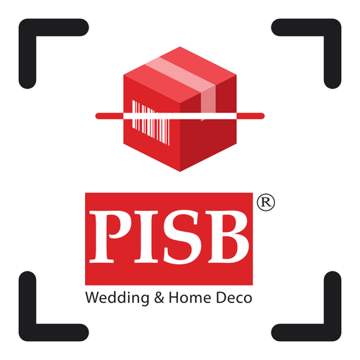

Carton labels & outlet transfers
Add it before you tap Open. If you add it from the next page, the icon will be a grey letter “P” instead of the PISB logo.
Sign in with the Gmail registered for you in Carton Tracker.